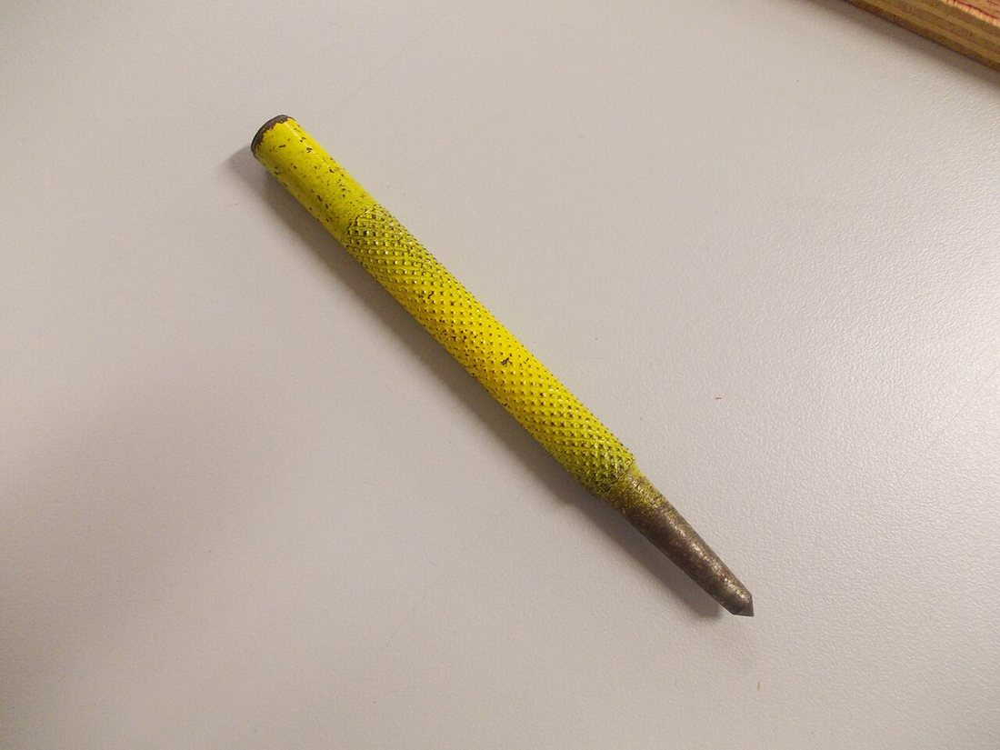
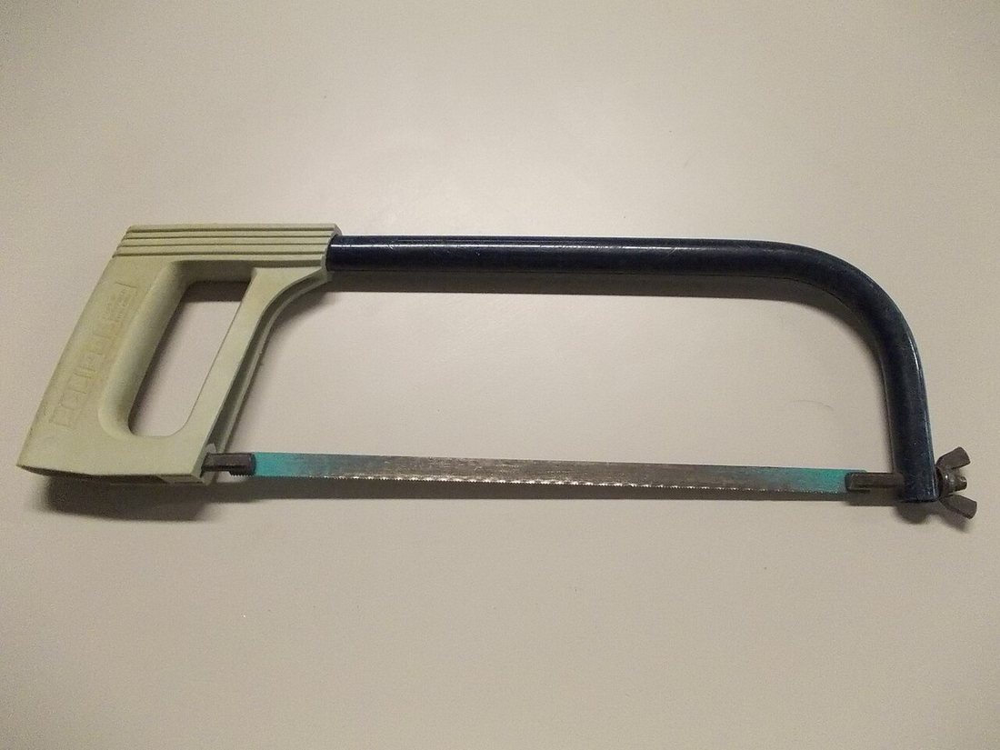
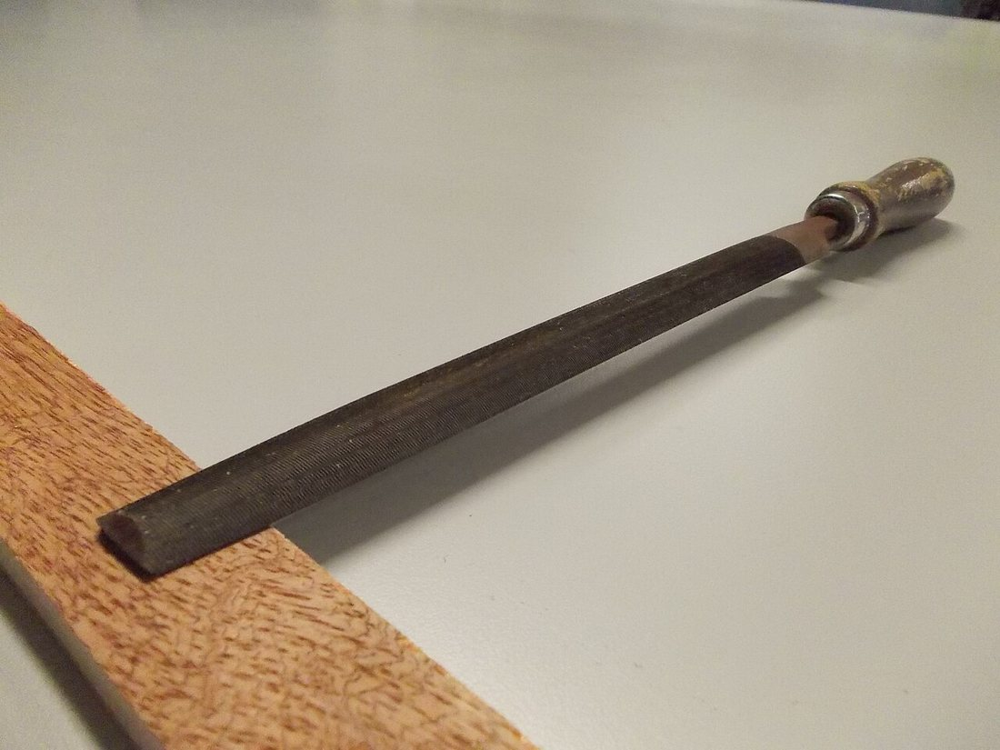

Көркем еңбек (ұлдар) · 3-бөлім · Металл өңдеу Art & Craft (Boys) · Section 3 · Metalworking Художественный труд (мальчики) · Раздел 3 · Обработка металла
📐 Металды белгілеу, кесу, егеу
📐 Marking, Cutting and Filing Metal
📐 Разметка, резка, опиливание металла
Тегіс табақтан дайын бөлшекке дейінгі үш негізгі слесарлық амал — дәл өлшеп, дұрыс кесіп, таза егеу. The three core bench-metalwork operations — measure precisely, cut correctly, file cleanly — from flat sheet to finished part. Три главные слесарные операции — точно разметить, верно отрезать, чисто опилить — от плоского листа до готовой детали.
Металдан бөлшек жасау әрдайым үш кезеңнен басталады. Алдымен болашақ бөлшектің сұлбасын дайындамаға көшіреді — бұл белгілеу (разметка). Содан соң артық металды алып тастайды — бұл кесу: жұқа табақты қайшымен, қалыңын темір ара (ножовка) немесе кескішпен. Соңында жиектерді тегістеп, өлшемге дәл жеткізеді — бұл егеу (опиливание) егеумен (напильник). Үш амалдың ортақ заңы — «жеті рет өлше, бір рет кес»: дәл белгілеу болмаса, ешбір кесу мен егеу қатені түзей алмайды. Бұл жұмыстар тискіде (стуктаушы тиски) бекітіліп, қорғаныш көзілдірікпен орындалады. Making a part from metal always begins with three stages. First the outline of the future part is transferred onto the workpiece — this is marking out. Then the surplus metal is removed — this is cutting: thin sheet with snips, thicker stock with a hacksaw or a chisel. Finally the edges are levelled and brought exactly to size — this is filing with a file. The shared law of all three is "measure seven times, cut once": without accurate marking no amount of cutting or filing can fix the mistake. The work is held in a bench vice and done in safety goggles. Изготовление детали из металла всегда начинается с трёх этапов. Сначала контур будущей детали переносят на заготовку — это разметка. Затем удаляют лишний металл — это резка: тонкий лист — ножницами, толстый — слесарной ножовкой или зубилом. В конце кромки выравнивают и доводят точно до размера — это опиливание напильником. Общий закон всех трёх операций — «семь раз отмерь — один раз отрежь»: без точной разметки ни резка, ни опиливание ошибку не исправят. Работу зажимают в слесарных тисках и выполняют в защитных очках.
Үш амал — үш құрал Three operations — three tools Три операции — три инструмента
🔍 Үлкейту үшін суретті басыңыз. 🔍 Tap a photo to enlarge it. 🔍 Нажмите на фото, чтобы увеличить.

📐 Белгілеу — кернерMarking — punchРазметка — кернер
Сызбаны металға дәл көшіреді: сызаттар мен бұрғылау нүктелері.Transfers the drawing onto metal: lines and drill points.Точно переносит чертёж на металл: риски и точки сверления.

✂️ Кесу — темір араCutting — hacksawРезка — ножовка
Қалың табақ пен сырықты сызаттан 1 мм қалдырып кеседі.Cuts thick sheet and bar, leaving ~1 mm to the line.Режет толстый лист и пруток, отступив ~1 мм от риски.

🪚 Егеу — напильникFiling — fileОпиливание — напильник
Жиекті тегістеп, өлшемге дәл жеткізеді әрі тазалайды.Levels the edge, brings it to size and cleans it up.Выравнивает кромку, доводит до размера и зачищает.
Белгілеу қалай жасалады How marking out is done Как выполняется разметка
Базадан өлшеп, сызатты сызып, нүкте салуMeasure from the datum, scribe the lines, punch the dotsМеряем от базы, чертим риски, кернируем точки
Белгілеу — сызбадағы өлшемдерді металл бетіне дәл көшіру. Барлық өлшемді бір базалық қырдан алу керек — сонда қателер жинақталмайды. Сызатты чертилкамен болат сызғышты немесе бұрышты (угольник) бойлай бір рет жүргізіп салады. Сызаттар қиылысқан жерге және бұрғылау орындарына кернермен нүкте салады. Бетті жақсы көру үшін оны бормен немесе көк бояумен (медный купорос) жұқа жағады. Marking out means copying the drawing's dimensions onto the metal exactly. Take every measurement from one datum edge — then errors don't add up. Scribe each line in a single pass with a scriber guided by a steel rule or a try-square. At the line crossings and at drill points make a dot with a centre punch. To see the surface clearly, coat it thinly with chalk or layout blue. Разметка — это точный перенос размеров с чертежа на металл. Все размеры берут от одной базовой кромки — тогда ошибки не накапливаются. Риску проводят чертилкой за один проход вдоль стальной линейки или угольника. На пересечениях рисок и в местах сверления ставят точку кернером. Чтобы хорошо видеть поверхность, её тонко покрывают мелом или раствором медного купороса.
💡 Неге бір базадан?Why from one datum?Почему от одной базы? Әр өлшемді алдыңғы сызаттан өлшесең, кішкене қателер қосылып, соңғы бөлшек көп бұрмаланады. Бір қырдан өлшесең — әр өлшем тәуелсіз әрі дәл.If you measure each size from the previous line, small errors add together and the final part is badly off. Measuring from one edge keeps every dimension independent and accurate.Если мерить каждый размер от предыдущей риски, мелкие ошибки складываются и деталь сильно «уходит». От одной кромки каждый размер независим и точен.
Егеулердің түрлері Types of file Виды напильников

🪡 НадфильдерNeedle filesНадфили
Кіші, дәл жұмысқа: әр пішін — өз орнына.For small, precise work: each shape has its job.Для мелкой точной работы: каждой форме — своё место.
| Форма сечения | Где применяют |
|---|---|
| Плоский | Прямые кромки и широкие плоские поверхности — основной напильник. |
| Квадратный | Прямоугольные пазы, отверстия и углы 90°. |
| Трёхгранный | Внутренние углы, заточка пил, острые углы менее 90°. |
| Круглый | Круглые отверстия и вогнутые поверхности. |
| Полукруглый | И плоские, и вогнутые места — самый универсальный. |
Насечка бывает драчёвая (крупная, для черновой работы), личная (средняя) и бархатная (мелкая, для чистовой и доводки).
| Қима пішіні | Қолданылуы |
|---|---|
| Жалпақ | Түзу қырлар мен кең тегіс беттер — негізгі егеу. |
| Шаршы | Тікбұрышты ойықтар, тесіктер және 90° бұрыштар. |
| Үшбұрышты | Ішкі бұрыштар, араны қайрау, 90°-тан кіші өткір бұрыштар. |
| Дөңгелек | Дөңгелек тесіктер мен ойыс беттер. |
| Жартылай дөңгелек | Тегіс те, ойыс та жерлер — ең әмбебап. |
Насечка ірі (драчёвая — дөрекі жұмысқа), орташа (личная) және ұсақ (бархатная — таза өңдеуге) болады.
| Cross-section | Where it is used |
|---|---|
| Flat | Straight edges and wide flat faces — the main file. |
| Square | Rectangular slots, holes and 90° corners. |
| Triangular | Inside corners, sharpening saws, sharp angles under 90°. |
| Round | Round holes and concave surfaces. |
| Half-round | Both flat and concave spots — the most versatile. |
The cut may be bastard (coarse, for rough work), second-cut (medium) or smooth (fine, for finishing and final sizing).
Табақтан бөлшекке дейін: жұмыс реті From sheet to part: the work sequence От листа к детали: порядок работы
Сызбаны оқы.Read the drawing.Прочитай чертёж. Бөлшектің пішіні мен өлшемдерін, бұрғылау орындарын анықта. Базалық қырды таңда.Work out the part's shape, its sizes and the drill points. Choose the datum edge.Определи форму и размеры детали, места сверления. Выбери базовую кромку.
Белгіле.Mark it out.Размечай. Базадан өлшеп, чертилкамен сызаттарды сыз, қиылыстарды кернермен белгіле.Measuring from the datum, scribe the lines and punch the crossings.Меряя от базы, проведи риски чертилкой и накерни пересечения.
Тискіге бекіт.Clamp in the vice.Зажми в тиски. Дайындаманы тискіге берік қыс; кесу сызығы тиски жиегіне жақын тұрсын — діріл азаяды.Hold the workpiece firmly; keep the cut line close to the vice jaws — less vibration.Надёжно зажми заготовку; линия реза должна быть у самых губок — меньше вибрация.
Кес.Cut.Режь. Сызаттан 1 мм қалдырып кес: артық металды кейін егеп аласың. Темір араны баяу, толық амплитудамен жүргіз.Cut 1 mm clear of the line: you'll file the surplus away later. Use slow, full strokes of the hacksaw.Режь отступив 1 мм от риски: лишний металл потом снимешь напильником. Веди ножовку медленно, на всю длину.
Дөрекі еге.Rough-file.Опили начерно. Драчёвый егеумен артық металды сызатқа дейін ал. Қырдың түзулігін угольникпен тексер.With a bastard file take the surplus down to the line. Check the edge for square with a try-square.Драчёвым напильником сними лишнее до риски. Проверь прямоту кромки угольником.
Таза өңде.Finish.Опили начисто. Личной/бархатный егеумен бетті тегістеп, өткір қырларды майдалап (фаска) ал. Өлшемді сызғышпен тексер.With a smoother file level the surface and break the sharp edges. Check the size with a rule.Личным/бархатным напильником выровняй поверхность и сними острые кромки (фаска). Проверь размер линейкой.
Жиі кездесетін қателер және себептері Common mistakes and their causes Частые ошибки и их причины
| Дефект | Причина | Как избежать |
|---|---|---|
| Размер «ушёл» | Мерили от разных кромок | Все размеры — от одной базы |
| Полотно ножовки сломалось | Слабое натяжение, перекос, рывки | Натянуть туго, пилить ровно и без спешки |
| Кромка «завалена» (непрямой угол) | Перекос напильника, нажим в конце хода | Держать ровно, нажим — только вперёд |
| Глубокие царапины | Грубая насечка на чистовом этапе | Сначала драчёвый, потом личной/бархатный |
| Напильник «забит» стружкой | Опилки застряли между зубьями | Чистить стальной щёткой (кардой) |
| Ақау | Себебі | Алдын алу |
|---|---|---|
| Өлшем «кетіп қалды» | Әр қырдан өлшелді | Барлық өлшем — бір базадан |
| Ара жүзі сынды | Әлсіз керу, қисаю, кенет соққы | Тығыз керу, біркелкі әрі асықпай кесу |
| Қыр «құлады» (тік емес бұрыш) | Егеу қисық, жүрістің соңында басу | Тегіс ұстау, басу — тек ілгері |
| Терең сызаттар | Таза кезеңде ірі насечка | Әуелі драчёвый, сосын личной/бархатный |
| Егеу жоңқаға толды | Жоңқа тістер арасына кептелді | Болат щёткамен (карда) тазалау |
| Defect | Cause | How to avoid it |
|---|---|---|
| Size is off | Measured from different edges | Take all sizes from one datum |
| Hacksaw blade snapped | Low tension, twisting, jerky strokes | Tension it tight, saw evenly and unhurried |
| Edge "rocked" (not square) | File tilted, pressing at end of stroke | Keep it level, press only on the forward stroke |
| Deep scratches | Coarse cut used at the finishing stage | Bastard first, then second-cut/smooth |
| File clogged with chips | Filings stuck between the teeth | Clean with a steel brush (file card) |
Қауіпсіздік ережелері Safety rules Правила безопасности
Көзілдірік киWear gogglesНадевай очки
Кесу мен егеуде ұсақ жоңқа ұшады — әрқашан қорғаныш көзілдірік ки.Cutting and filing throw off sharp chips — always wear safety goggles.При резке и опиливании летит острая стружка — всегда работай в защитных очках.
Сапты тексерCheck the handleПроверь ручку
Егеуді сапсыз қолданба: жалаңаш құйрығы (хвостовик) алақанды жарақаттайды.Never use a file without a handle: the bare tang can stab your palm.Не работай напильником без ручки: голый хвостовик ранит ладонь.
Берік бекітClamp firmlyЗажимай надёжно
Дайындама тискіде босаңсымасын — қозғалса, құрал сырғанап, қол жарақаттанады.The workpiece must not move in the vice — if it slips, the tool can slip and cut you.Заготовка не должна болтаться в тисках — если сдвинется, инструмент соскользнёт.
Жоңқаны қолмен сыпырмаDon't brush chips by handНе сметай стружку рукой
Металл жоңқасы өткір. Оны тек щёткамен сыпыр, ешқашан жалаң қолмен тиме.Metal chips are sharp. Sweep them only with a brush, never with bare hands.Металлическая стружка острая. Сметай её только щёткой, никогда голой рукой.
Өткір қырды алBreak sharp edgesСнимай заусенцы
Кескеннен кейінгі үшкір жүздер (заусенцы) кеседі — оларды бірден егеп ал.The sharp burrs left after cutting can cut you — file them off at once.Острые заусенцы после реза ранят — сразу опили их напильником.
Мұғаліммен біргеWith the teacherВместе с учителем
Жаңа құралды бірінші рет мұғалімнің көрсетуімен қолдан.Use any new tool for the first time only under the teacher's guidance.Новый инструмент в первый раз используй под руководством учителя.
💡 Есте сақта 💡 Remember 💡 Запомните
Әр металл бөлшегі үш амалдан өтеді: белгілеу → кесу → егеу. Дәлдік белгілеуден басталады — барлық өлшемді бір базадан ал. Кескенде сызаттан 1 мм қалдыр, артығын егеп таза жеткіз. Құралды дұрыс ұста, көзілдірікпен жұмыс істе. Жеті рет өлше — бір рет кес! Every metal part goes through three operations: mark → cut → file. Accuracy starts with marking — take all sizes from one datum. When cutting leave 1 mm to the line, then file the surplus down clean. Hold the tools correctly and work in goggles. Measure seven times — cut once! Каждая металлическая деталь проходит три операции: разметка → резка → опиливание. Точность начинается с разметки — все размеры бери от одной базы. При резке оставляй 1 мм до риски, затем опили лишнее начисто. Держи инструмент правильно и работай в очках. Семь раз отмерь — один раз отрежь!